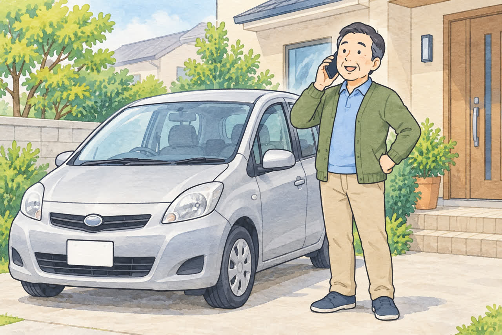
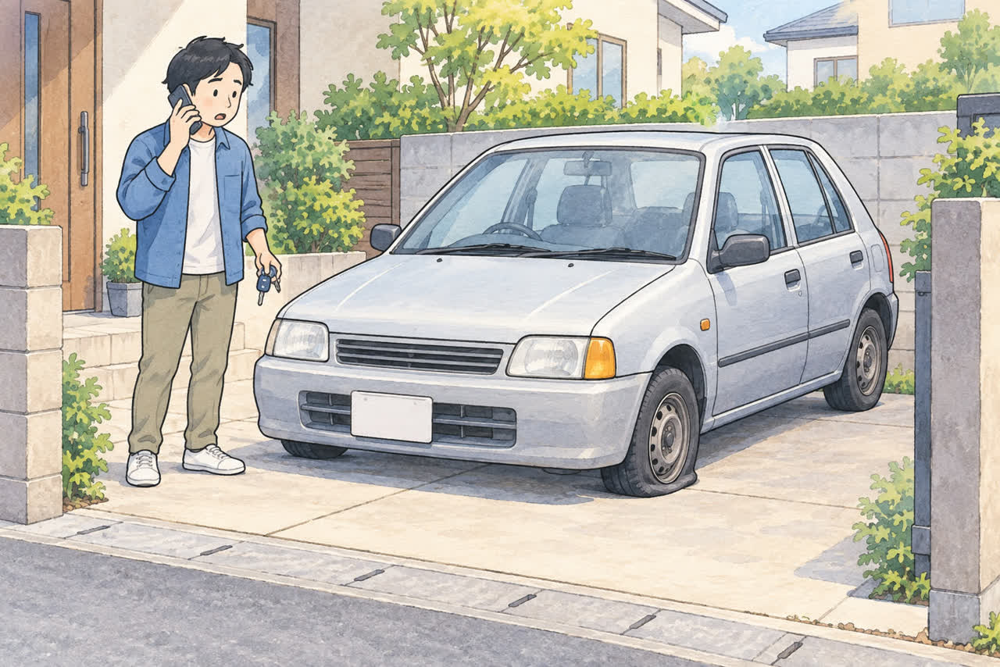
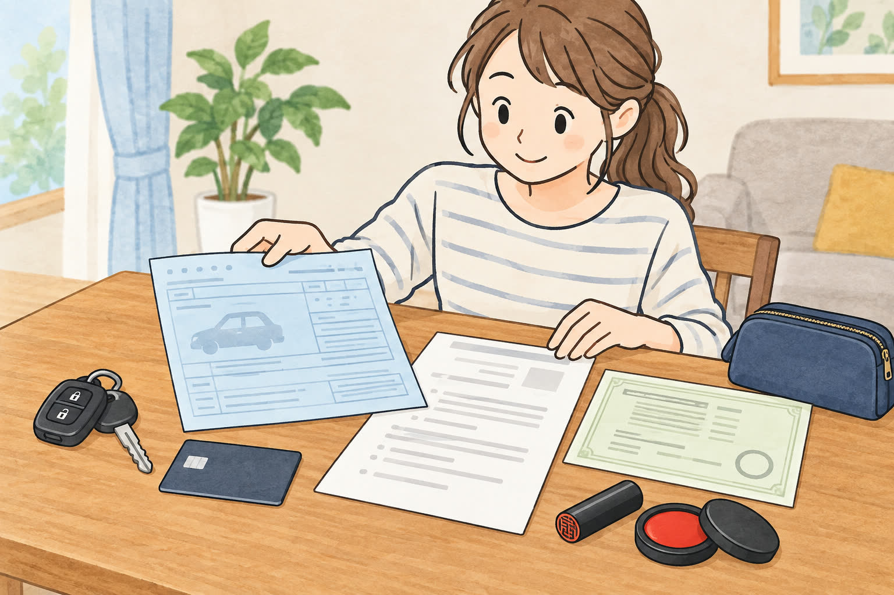

動かない車でお困りの方へ
エンジンがかからない車でも
引き取ってもらえる？
公開
こんにちは、足立区江北で自動車解体・廃車買取をしている「大崎商店 環七店」です。
「久しぶりに乗ろうとしたら、エンジンがかからなかった」
「何年も駐車場に置いたままで、もう動くかどうかもわからない」
「動かない車なんて、引き取ってもらえないのでは？」
こんなお悩みをお持ちの方は、意外と多くいらっしゃいます。
結論からお伝えすると、エンジンがかからない車でも、大崎商店で引き取ることができます。 車を荷台にのせて運ぶ積載車で伺いますので、お客様が無理に車を動かす必要はありません。駐車場所や車の状態を確認し、引き取り方法をご案内します。
この記事では、エンジンがかからない車を手放すときの流れや、事前に確認しておきたいこと、準備しておくものを、やさしくご紹介します。

エンジンがかからない車でも、引き取れる理由
「動かない車は、もう価値がないのでは？」と思われるかもしれません。でも、そんなことはありません。
大崎商店は、自動車の解体を強みとしているお店です。引き取った車は、基本的に自社で解体し、鉄などの資源としてリサイクルします。また、直せる車は修理して、もう一度車として販売することもあります。
つまり、エンジンがかからなくても、車には資源としての価値がしっかり残っているのです。
そのため、車種や状態によっては、動かない車でも買取ができ、引き取り当日にその場で現金をお支払いできることもあります。「どうせ処分にお金がかかるだろう」とあきらめる前に、まずはご相談ください。
エンジンがかからなくなる主な原因
エンジンがかからない原因は、車によってさまざまです。たとえば、次のようなことがよくあります。
- バッテリーが上がっている：長い間乗っていないと、バッテリーの電気がなくなってしまいます
- 長く放置していた：ガソリンが古くなったり、部品が傷んだりしていることがあります。バッテリー上がりに加え、タイヤの空気圧低下や劣化が起きている場合もあります
- 故障している：エンジンや電気系統などにトラブルがある場合です
- 事故にあった：事故の衝撃で、エンジンや周りの部品が壊れていることがあります（事故車の買取について）
バッテリーが原因であれば、充電や交換で再びエンジンがかかることもあります。ただ、これから手放すと決めている車なら、引き取りのためだけに修理やバッテリー交換をする前に、まずはご相談ください。 修理にお金をかけるより、そのままの状態でご相談いただくほうが、手間もお金もかからないことが多いです。
また、無理にエンジンをかけようとしたり、慣れない方がご自身で修理しようとしたりするのは危険なこともあります。すでに駐車場などに停めてある車は、無理に動かさず、そのままご相談ください。
積載車で、そのまま引き取りに伺います

エンジンがかからない車は、積載車（車を荷台にのせて運ぶトラック）で引き取りに伺います。
ウインチ（車を引っぱり上げる装置）などを使うことで、エンジンがかからない車も荷台にのせて運べます。ただし、タイヤが回らない、ハンドルが動かない、事故で車体が大きく変形しているなどの場合は、追加の道具や別の作業方法が必要になることがあります。事前に状態をお知らせください。
大崎商店では、買取できる車は遠くても無料で引き取りに伺います。買取価格がつかない車も、環七店から車で片道約30分圏内なら、レッカー代・出張費は無料です。足立区をはじめ、東京23区や埼玉県南部、千葉県西部などからもご相談いただけます。無料で伺えるかどうかは、場所と車の状態を伺ってご案内します。
こんな場所に置いてある車もご相談ください
- 自宅の車庫や庭
- 月極駐車場
- マンションの駐車場
- 実家に置いたままの車
親御さんが免許を返納して残った車のことは「免許を返納した親の車、どう処分する？」もご覧ください。
狭い道や高さ制限のある駐車場は、事前にご相談ください
エンジンがかからない車は、積載車をすぐ近くまで寄せて、荷台にのせる必要があります。そのため、積載車が入れないような細い道の奥に車がある場合は、引き取りが難しくなります。
「家の前の道が狭い」「車庫の奥にあって出しにくい」「地下や立体駐車場にある」という場合は、お電話のときに道の広さ、車の周りの様子、入口の高さ制限などを教えてください。場所や状況を伺ったうえで、引き取りができるかどうかをご案内します。
大崎商店の引き取り事例
実際に、大崎商店ではこんな車を引き取っています。
バッテリーが切れて、エンジンがかからない軽バン
足立区内のご自宅の駐車場から引き取った軽バンです。長く乗っていなかったため、バッテリーが切れてエンジンがかからなくなっていました。バッテリーを交換したり、充電したりする必要はありません。そのままの状態で積載車にのせて引き取りました。
タイヤがパンクして、動かせないワゴンR
こちらも、足立区内のご自宅の駐車場から引き取った軽自動車のワゴンRです。タイヤがパンクしていて、押して動かすこともできませんでした。このような車でも、積載車で引き取ることができます。お客様がタイヤを交換したり、修理したりしていただく必要はありません。
長く置いたままの車は、バッテリーとタイヤの状態もお知らせください
長年置いたままの車では、バッテリー上がりと、タイヤの空気圧低下やパンクが重なっている場合があります。 タイヤの空気が抜けていても、必ずしもパンクとは限りません。原因がわからなくても、見たままの状態をお伝えいただければ大丈夫です。
タイヤがパンクしている場合やエンジンがかからない場合は、スタッフが状態を確認し、ウインチなどを使って安全に積み込む方法を判断します。お客様がパンクした車を運転したり、無理に押して動かしたりする必要はありません。 引き取り前にタイヤの状態をお知らせください。
なお、引き取った後に解体するか、修理して再利用できるかは、車の状態によって判断します。わざわざ直してからお渡しいただかなくても大丈夫です。
「うちの車も同じような状態かも」と思ったら、お気軽にご相談ください。
お電話のときに教えていただきたいこと

エンジンがかからない車の引き取りをスムーズに進めるために、お電話のときに次のことを教えていただけると助かります。わかる範囲で大丈夫です。
- 車種・初度登録年月（軽自動車は初度検査年月）：車検証などで確認できます。年式の目安としてお伝えください
- 車が置いてある場所：住所や駐車場の名前など
- 自分で走れるかどうか：エンジンがかかって自走できるか、できないか
- わかる範囲の症状：エンジンがかからない、タイヤがつぶれている、事故で壊れている、など。原因の診断は不要です
- 鍵があるか：鍵の有無や、ハンドル・シフトが動くかを、すでにわかる範囲でお知らせください。無理に操作する必要はありません
- 周りのスペース：前の道の広さ、駐車場の入口や高さ制限、車の前後の空きスペースなど
- 車検の有効期限：車検切れの場合も、そのままお知らせください（車検切れの車の廃車について）
特に大切なのは、自走できるかどうかです。自走できない場合は、その理由がわかると、伺うときに必要な道具などを準備していけるので、当日の引き取りがスムーズになります。
あわせて、積載車が車の近くまで入れるか、鍵があるかも、引き取りの方法を決めるうえで大切なポイントです。わからない場合は、そのままお伝えください。
引き取りの前に準備しておくもの

廃車に必要な書類
普通車の場合は、基本的に次のものをご用意ください。
- □ 車検証の原本（電子車検証の場合も原本が必要です。「自動車検査証記録事項」があれば、あわせてご用意ください。見つからない場合は車検証をなくしたけど廃車できる？をご覧ください）
- □ ナンバープレート（前・後ろの2枚）（取り外しについては当店にご相談ください）
- □ 所有者の印鑑登録証明書（発行から3か月以内）
- □ 所有者の実印
委任状や譲渡証明書は、当店で用意します。引き取りのときに、記入と実印の押印をしていただければ大丈夫です。
住所や名前が変わっている場合や、所有者がローン会社などになっている場合は、追加の書類が必要になります。詳しくは「廃車に必要な書類チェックリスト（普通車）」の記事もご覧ください。
軽自動車の場合は、基本的に次の2点をご用意ください。
- □ 車検証の原本（電子車検証の場合も原本が必要です）
- □ ナンバープレート（前・後ろの2枚）（取り外しについては当店にご相談ください）
軽自動車では、印鑑登録証明書や実印は不要です。所有者が販売店やローン会社などになっている場合は、事前に当店へお知らせください。詳しくは「軽自動車の廃車に必要な書類・準備チェックリスト」もご覧ください。
車の中の荷物を片付ける
長く乗っていない車には、思わぬ荷物が残っていることがあります。引き取りの前に、次のものを確認しておきましょう。
- 車検証や自賠責保険証明書（引き取りのときに必要なので、車検証入れごと取り出して保管しておきましょう）
- ETCカード
- CD・DVD、カーナビに入れたSDカード
- トランクの荷物
- お守りや写真など、大切なもの
ご相談から引き取りまでの流れ
- お電話でご相談
車種・場所・自走できるかどうか（できない場合はその理由）をお伺いします。 - 書類と引き取り方法のご案内
必要な書類や、引き取りの方法、買取ができるかどうかをご案内します。 - 日程を決めて引き取り
積載車で伺い、車を荷台にのせて運びます。書類の記入と押印もこのときにお願いします。 - 廃車の手続き
解体や抹消登録などの手続きは、当店が代行します。
お客様が運輸支局へ出かけたり、車を運転したりする必要はありません。当日の流れは「廃車のご依頼から現金お支払いまでの流れ」の記事でも詳しくご紹介しています。
乗らない車は、早めに手放すのがおすすめ
エンジンがかからない車でも、廃車の手続きをしないかぎり、原則として毎年4月1日時点の所有者に自動車税（軽自動車は軽自動車税）がかかります。普通車で所有権が販売店やローン会社に留保されている場合は、使用者が納税義務者になります。
普通車の自動車税は、納付済みであれば抹消登録の翌月から年度末までの分が還付対象になります。一方、軽自動車税には年度途中の廃車による月割り還付がありません。車を引き取った日と手続きが完了する日は同じとは限らないため、年度末など期限がある場合は早めにご相談ください。税金・重量税・自賠責保険が戻る条件は「車検切れの車で気をつけたいお金のこと」で詳しくまとめています。
また、長く置いておくほど、サビや部品の傷みが進んでしまいます。「いつか直して乗るかも」と思っていても、使う予定がないなら、早めに手放すほうがご家族の負担も少なくなります。
エンジンがかからない車のことは、大崎商店にご相談ください
「動かない車だから、引き取ってもらえないかも」と心配しなくても大丈夫です。大崎商店では、エンジンがかからない車も、事故で動かなくなった車も、積載車で引き取りに伺います。
- 廃車手続きの代行手数料は無料
- 引き取りは無料：買取できる車は遠方も伺い、買取価格がつかない車も環七店から車で片道約30分圏内は無料です（場所と車の状態を伺ってご案内します）
- エンジンがかからない車、事故車、長く動かしていない車も引き取り
- 車種や状態によっては、引き取り当日その場で現金買取も可能
動かない車の処分を、まるごとお手伝いします。
電話で相談する 03-3854-4141大崎商店 環七店
電話：03-3854-4141
〒123-0872
東京都足立区江北7丁目1−3
営業時間：月〜土 10:30〜18:00
休業日：日曜・祝日
環七沿い／舎人ライナー
西新井大師西駅
大崎商店 入谷店
電話：03-3899-2837
〒121-0836
東京都足立区入谷7丁目5−11
営業時間：月〜土 9:30〜17:30
休業日：日曜・祝日・第2土曜
お電話の際は、「エンジンがかからない車の引き取りについて」とお伝えください。車検証をお手元にご用意いただくと、ご案内がスムーズです。
※掲載画像はAIで生成したイラストです。実際の店舗・引き取り事例・車両・書類とは異なります。
参考：JAF・バッテリー上がりの原因と症状／東京都主税局・自動車税／足立区・軽自動車税